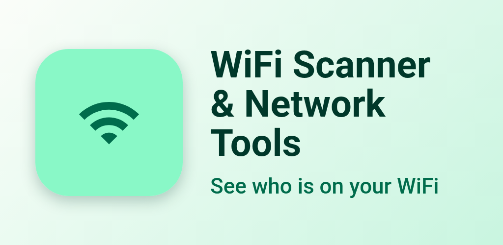
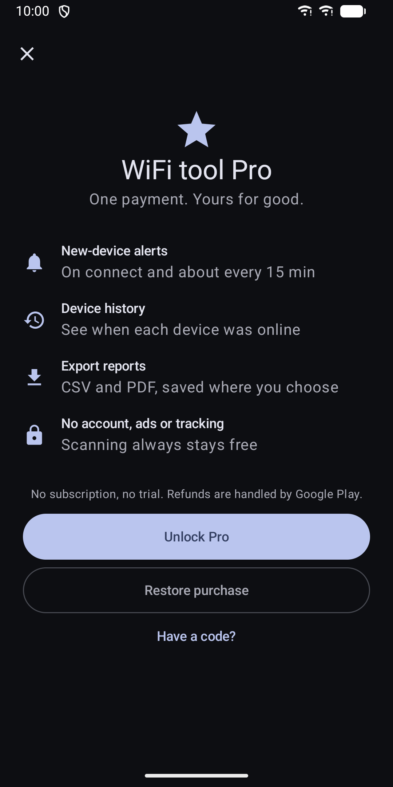

WLAN-Scanner & Netzwerktools
Sieh, wer in deinem WLAN ist. Ping, Traceroute, DNS und Port-Checks.




Über die App
Wer ist in meinem WLAN? Warum ist es so langsam? WLAN-Scanner & Netzwerktools hilft dir, das herauszufinden, und lässt die Ergebnisse auf deinem Handy. GERÄTE IN DEINEM NETZWERK - Scanne dein Heimnetz und sieh jedes Gerät, das antwortet - Namen stammen aus mDNS, UPnP/SSDP, NetBIOS und deinem Router, dazu eine eingebaute Herstellerdatenbank - Gib Geräten eigene Namen und markiere sie als vertrauenswürdig oder verdächtig - Erstmals gesehene Geräte werden markiert, damit Unbekannte auffallen - Liste durchsuchen, filtern und sortieren NETZWERKTOOLS - Ping mit Latenzdiagramm. Ist ICMP blockiert, nutzt die App stattdessen einen TCP-Test - Traceroute - DNS-Abfrage: A-, AAAA- und PTR-Einträge - Port-Scan mit Voreinstellungen oder eigenen Ports, bis zu 1024 pro Durchlauf - Die Tools zielen standardmäßig auf dein lokales Netz. Bei öffentlichen Adressen wird vorher nachgefragt WLAN-INFO - Netzwerkname, Signalstärke, Band, Kanal, Verbindungsgeschwindigkeit und WLAN-Standard - Deine IP-Adresse, Gateway, DNS-Server und Subnetz HOMESCREEN-WIDGET - Geräteanzahl und letzter Scan auf einen Blick PRO (EIN KAUF IN DER APP) - Warnungen bei neuen Geräten, wenn du dich mit dem WLAN verbindest und etwa alle 15 Minuten - Geräteverlauf: sieh, wann jedes Gerät online war - Berichte als CSV oder PDF exportieren, am Ort deiner Wahl Scan, Gerätenamen, Vertrauensmarkierungen, WLAN-Info und alle Tools funktionieren ohne Kauf. Pro lässt sich auf jedem Gerät mit demselben Google-Konto wiederherstellen. DATENSCHUTZ - Kein Konto, keine Werbung, keine Analyse, kein Tracking - Gerätelisten bleiben auf deinem Handy und sind vom Cloud-Backup ausgenommen - Es wird nichts hochgeladen. Kontakt gibt es nur zu Google Play, für den Pro-Kauf - Exporte passieren nur auf deinen Wunsch, an einen Ort, den du wählst - In den Einstellungen kannst du alle Daten löschen GRENZEN - Scannt IPv4-/24-Netze, zum Beispiel 192.168.1.0/24. Kein IPv6. Nicht für Firmennetzwerke gedacht - Android 10 und neuer verbergen MAC-Adressen vor Apps, daher werden Geräte wenn möglich über den Namen erkannt. Geräte mit zufälliger MAC können beim erneuten Verbinden als neu erscheinen - Hintergrundprüfungen laufen etwa alle 15 Minuten oder später. Energiesparmodus und manche Hersteller können sie verzögern oder stoppen, und ein Gerät, das zwischen zwei Prüfungen kommt und geht, kann unbemerkt bleiben - Der WLAN-Name erfordert die Standortberechtigung. Das ist eine Android-Vorgabe. Die App nutzt oder speichert deinen Standort nicht Funktioniert im hellen und dunklen Modus, auf Handys und Tablets, mit TalkBack. Scanne nur Netzwerke und Hosts, die du testen darfst.